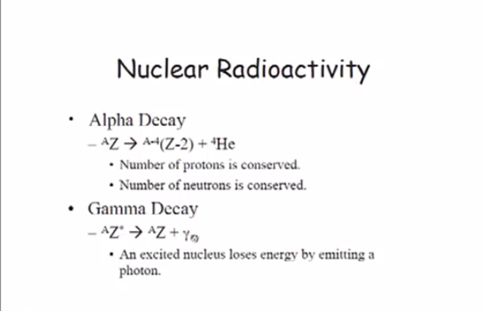
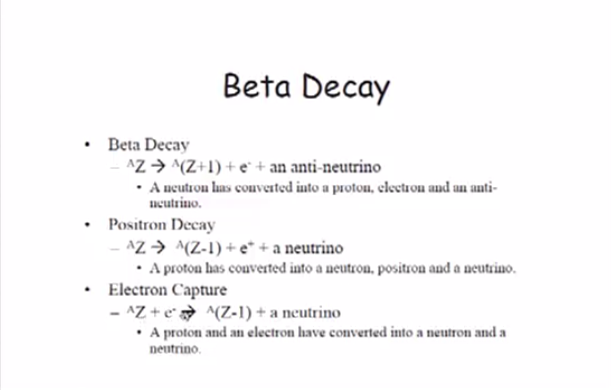
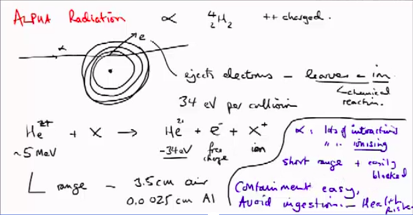
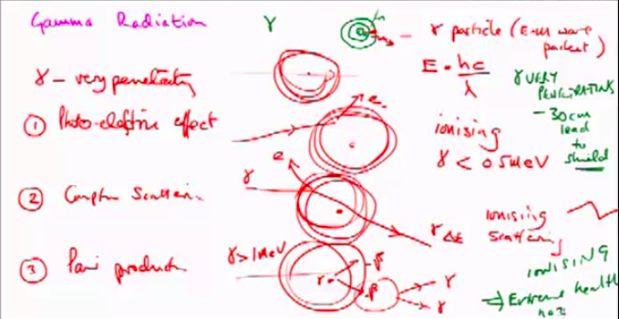
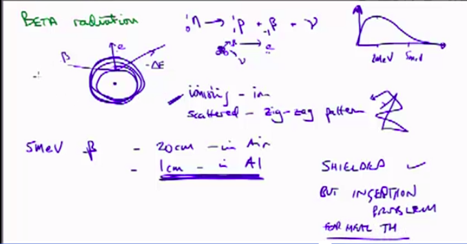
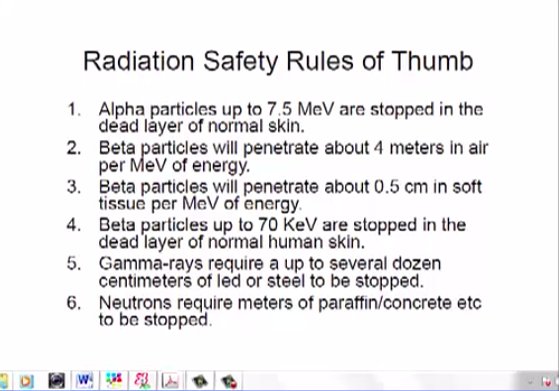

Index
- Section 0
- Section 1 - Nuclear Basics
- Lecture 1.0 - Learning outcomes and technical tour
- 1.1 Atoms and Nuclei
- 1.2 - Nuclear Structure & Nuclear Reactions
- 1.3 Isotopes and Radioactivity
- 1.4 Radiation and Interactions with MAtter
- Section 2 - Neutrons and Fission
1.4 Radiation and Interactions with MAtter
Ionisation is hazardous to human healthAlpha,
Beta radiation is high energy negatively charged, too many protons, longer range than alpha
Gamma radiation high penetration potential,
all change properties of materials they pass through
Decay Types


Alpha - high atomic mass numbers
Large nuclei >82 unstable
Proton #-2
Mass# -4
Short range as loses energy with "collision" quickly.

Gamma - Excited nuclei
decay in the shell model from excited to base state they emit Gamma radiation
emitted as a photon releasing energy
very small mass, so very penetrating as probability of reaction is low
photoelectric effect where gamma particle is absorbed and causes electron to be released, (ionising)
only occurs when paricle >1/2MeV
or compton scattering is similar but gamma particle exits the atom deflected
Pair production is where gamma particle comes close enough to nucleus to be absorbed.

Beta - Too many neutrons in nuclei
neutron transmutes into proton and electron and anti-neutrino
proton#+1 so new element
Lighter than alpha so has less collisions and travels further

Positron Decay - Too many protons
proton#-1 so new element
mass # = constant
emits positron and neutrino, and gamma radiation
Electron capture - Too many protons
proton captures electron from inner shell
changes to neutron
proton#-1
mass = constant
neutrino is emitted
cesium and strontium are the bad guys
30 year half-life and readily absorbed by body
